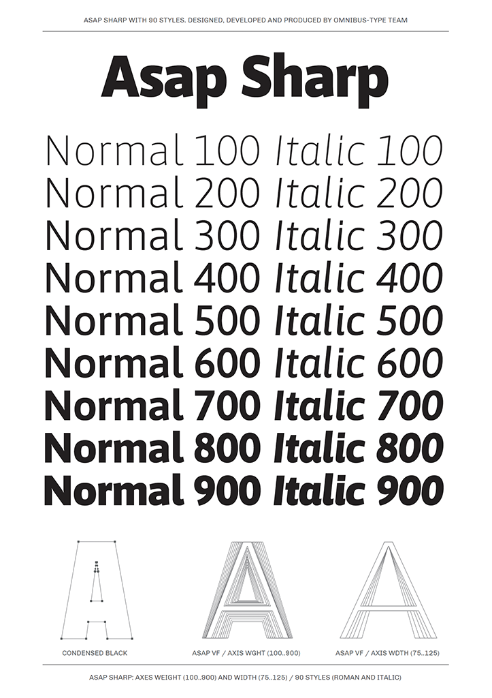

Asap Sharp is the non-rounded version of the Asap family. It features a uniform stroke and clean, sharp corners for a more technical, geometric feel. Like the original, it offers standardized character widths across all styles, allowing you to change weights on-the-go without reflowing the text. Designed by Pablo Cosgaya and developed by the Omnibus-Type team, it is optimized for both screen and desktop use.
To contribute, see github.com/Omnibus-Type/Asap_Sharp.
